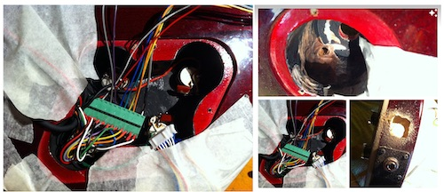
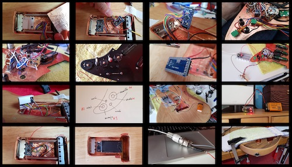
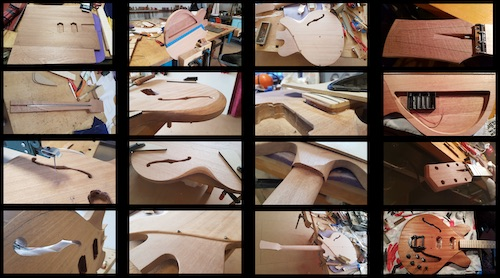

<!DOCTYPE html>
<html lang="en"></html>
<head>
  <meta charset="utf-8">
  <meta content="IE=edge" http-equiv="X-UA-Compatible">
  <meta content="width=device-width, initial-scale=1" name="viewport">
  <title> Rafael Rebolleda — Fab Academy 2020 Documentation</title>
  <!-- Google Fonts-->
  <link rel="stylesheet" href="https://fonts.googleapis.com/css?family=Catamaran&amp;display=swap">
  <link rel="stylesheet" href="css/main.css">
</head>
<body> 
  <nav>
    <header>
      <ul>
        <li>Rafael Rebolleda</li>
        <li>ESNE + LEON</li>
        <li>Madrid, Spain</li>
      </ul>
      <p class="bio">CX consultant and professor. Single, semi-remote Fab Acadeny student.</p>
    </header>
    <ol>
      <li><a class="red" href="#">About me</a></li>
      <li><a class="blue" href="FP/">Final Project</a></li>
      <li><a class="blue" href="DEV/">Project Development    </a></li>
    </ol>
    <h1>Assignments</h1>
    <ol> 
      <li><a href="W1/">Principles & Practices</a></li>
      <li><a href="W2/">Computer Aided Design</a></li>
      <li><a href="W3/">Computer Controlled Cutting</a></li>
      <li><a href="W4/">Electronics Production</a></li>
      <li><a href="W5/">3D Scan + Printing</a></li>
      <li><a href="W6">Electronics Design</a></li>
      <li><a href="W7/">Computer Controlled Machining</a></li>
      <li><a href="W8/">Embedded Programming</a></li>
      <li><a href="W9/">Input Devices      </a></li>
      <li><a href="W10/">Applications & Implications</a></li>
      <li><a href="W11/">Output Devices</a></li>
      <li><a href="W13/">Intellectual Property</a></li>
    </ol>
  </nav>
  <main>
    <h1>About Me</h1>
    <p>Hi there and thanks for dropping by :)</p>
    <p>Really quick (for now):</p>
    <ul>
      <li>Currently: Indepdent consultant + University professor in User Experience</li>
      <li>MBA in Digital Transformation + Masters in Strategic Knowledge Management</li>
      <li>BA in Multimedia</li>
      <li>20+ years of experience in Innovation, designing digital products and services with international reach</li>
      <li>Startups, corporations, agencies and consulting</li>
    </ul>
    <h2>Background</h2>
    <p>I've already done a few projects in what I would call <i>craftmanship prototyping</i>. I guess it's just a fancy way of saying hacking a few ideas together with whichever means available and a good deal of good old sweat.</p>
    <p>Here's the modification and installation of one pick-up per string:</p>
    <p>In this case, I installed an arduino-based MIDI controller:</p>
    <p>This is a full guitar hand-made from scratch:</p>
  </main>
</body>